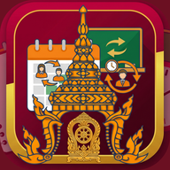

ธุรการ · ปพ.
WL Admin
ทะเบียนนักเรียน เช็กชื่อ เวลาเรียน และงาน ปพ. ศูนย์กลางบัญชีผู้ใช้ของทุกแอป
เปิดแอป งานวิชาการWL Academic
คลังงานวิชาการ จัดภาระงานครู ติดตามงาน และออกคำสั่งมอบหมายงานประจำปี
เปิดแอป ตารางสอนWL Scheduler
จัดรายวิชา ครู และตารางสอนของโรงเรียน พร้อมเอกสารราชการที่เกี่ยวข้อง
เปิดแอป
สอนแทนWL Substitution
จัดครูสอนแทนเมื่อครูลา ติดตามและสรุปรายงานการสอนแทน
เปิดแอป เอกสารWL Draft
ร่างบันทึกข้อความ หนังสือภายนอก คำสั่ง และประกาศ ตามแบบหนังสือราชการ
เปิดแอปทุกแอปใช้บัญชีเดียวกัน (บัญชี WL Admin) · ล็อกอินครั้งเดียวในแต่ละแอป